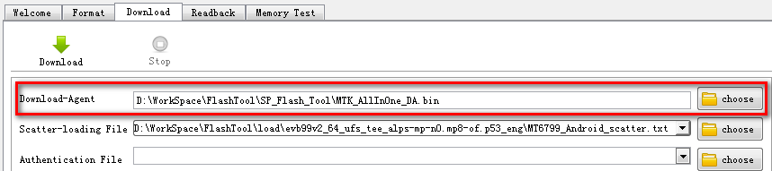
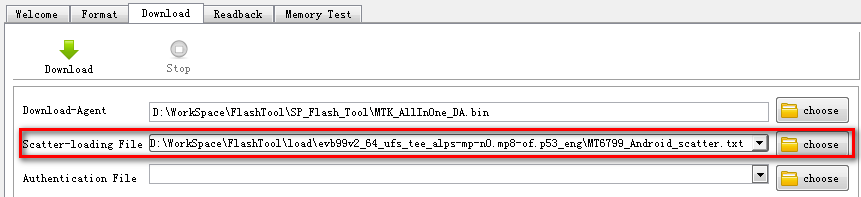
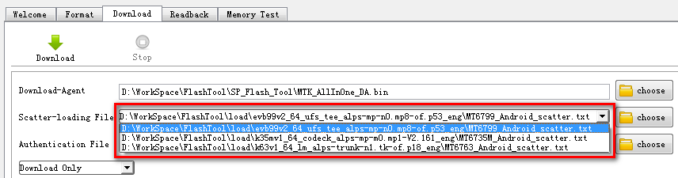
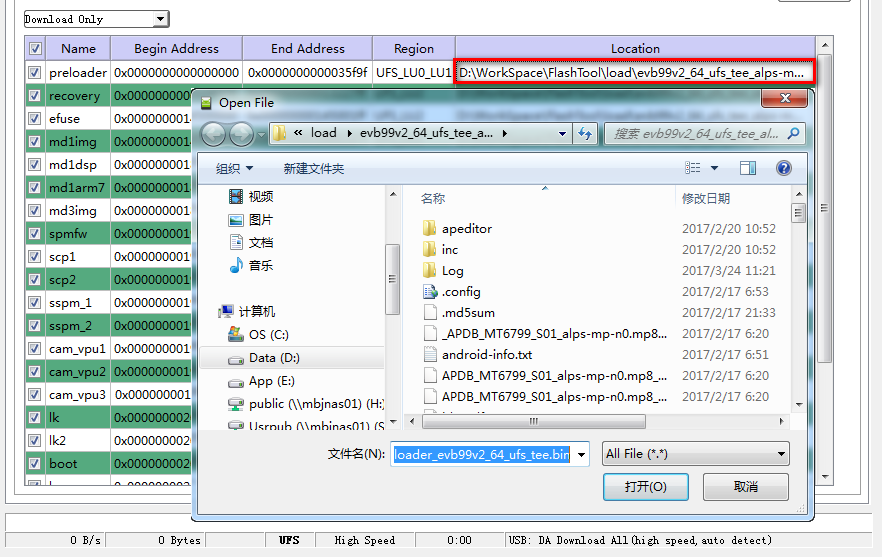
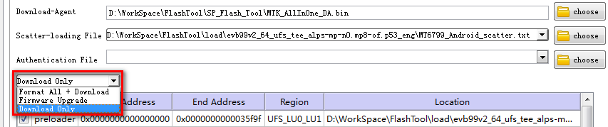

�� Select DA
Please make sure Download Agent (DA) is loaded on the tool. MTK_AllInOne_DA.bin could be selected by ��choose�� button by the side of "Download-Agent" label.
DA detects the target��s flash type and is in charge of downloading the built image to the flash memory.
Generally, MTK_AllInOne_DA.bin is included in tool folder.

�� Select Scatter File
Please select the scatter file first according to the chip which is supposed to execute. By scatter file, SP Flash Tool will be notified what type Smart Phone
chip will be operated. For instance, if the platform is MT6799, please select MT6799_Android_scatter.txt first.
Scatter File could be loaded by ��choose�� button by the side of "Scatter-loading File" label or select in history list, and the file can be found in the load folder.


�� Assign Images
If scatter file has been loaded, then all image files in the load folder will be automatically loaded.
To manually a special image file for certain ROM, click on the ROM location: a file browser will pop up for file selection.

�� Select Download Scene
Please select expected download scene before download, Download Only is the default scene.
There are three download scenes for download operation: Download Only, Format All + Download and Firmware Upgrade.
ROMs Selection in Format All + Download and Firmware Upgrade is unchangeable. Scene selection will change to Download Only automatically if any ROM selection change is detected.

�� Download Only
– Function
Download all selected images.
�� Format All + Download
– Function
Format Whole Flash and download all images.
�� Firmware Upgrade
– Function:
Aim to protect important data from to be lost.
– Prerequisite:
Phone could boot up to home screen.
Phone has been written calibration data.
– Scenario:
Case1- Layout Not Changed:
�� Normal Visible Regions: Format ->Download
�� Normal Invisible Regions: Format
�� Bootloaders/Protected Invisible/Reserved Regions: No Action
�� Kept Visible Regions:
Check: Format->Download
Uncheck: No Action
Case2-Layout Changed:
�� Bootloaders/Normal Visible Regions: Format ->Download
�� Normal Invisible Regions: Format
�� Reserved Regions: No Action
�� Protected Invisible Regions:
Partition Changed: Readback->Format->Restore
Partition Not Changed: Format->Download
�� Kept Visible Regions:
Check: Format->Download
Uncheck: Pop up error message and stop the operation.